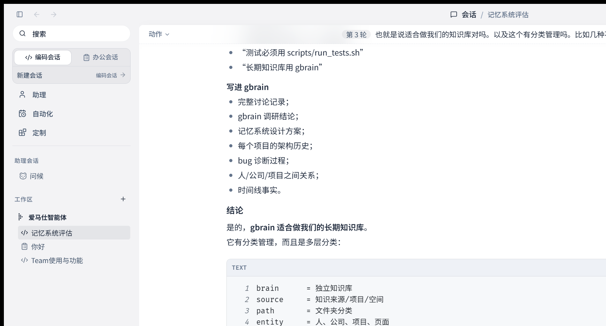

01
AI Apps
Desktop-first AI products that combine chat, tools, files, terminals, documents, and remote control into coherent workflows rather than isolated demos.
Void is a portfolio project focused on local-first AI apps, agent runtime design, developer workflows, and educational systems that turn advanced tooling into usable products.

Desktop-first AI products that combine chat, tools, files, terminals, documents, and remote control into coherent workflows rather than isolated demos.
Teaching-oriented systems that make agent behavior visible: plans, diffs, tests, usage reports, and repeatable workflows for new developers.
Open-source architecture, extensible skill systems, and project documentation designed for contributors, learners, and builders.
Clear narratives around agentic software: what works, what fails, how to verify AI-generated work, and how to build with confidence.
Users should see what the agent is doing: files read, commands run, tools invoked, and checks passed.
Sessions, cancellation, usage tracking, remote progress, and durable context matter more than a single prompt.
The interface should show good engineering practice: plan, execute, verify, review, and preserve context.